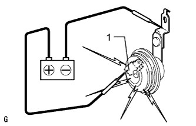

SECURITY HORN ASSEMBLY > INSPECTION |
| 1. INSPECT SECURITY HORN ASSEMBLY |
 |
Apply battery voltage to the horn connector and check the operation of the horn.
| Measurement Condition | Specified Condition |
| Battery positive (+) → Terminal 1 Battery negative (-) → Horn bracket | Horn sounds |